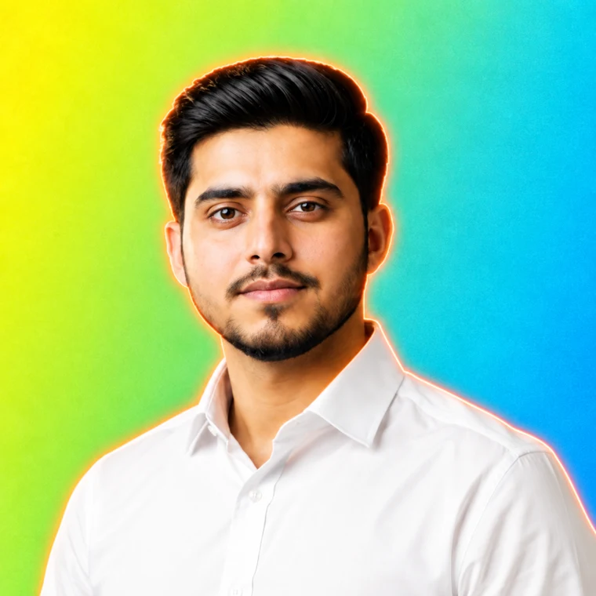

AVAILABLE FOR REMOTE PROJECTSIntelligent ideas.
Intelligent ideas.
Real-world solutions.
I am Noman, an AI developer and automation engineer. I build web applications, connect your tools, and turn repetitive work into reliable workflows.

< / >Full-stack thinking.
AI-powered building.
AI-powered building.
Less busywork.
More possibilities.
THE HUMAN BEHIND THE CODEMore possibilities.
BUILT WITH THE RIGHT TOOLS
01 / A LITTLE ABOUT MECode with purpose.
Code with purpose.
Automation with impact.
I connect software development with practical AI. My work spans full-stack web applications, LLM integrations, RAG chatbots, and automated business workflows.
Through freelance projects, a remote MERN development role, and Python/Django backend training at Enigmatix, I have developed a hands-on approach to APIs, databases, responsive interfaces, and system integrations.
MY FOCUSUseful AI. Connected systems. Clean experiences.
EDUCATIONComputer Science · The Islamia University of Bahawalpur
02 / MY TOOLKIT
The skills behind the solutions.
From the interface to the workflow, I build across the stack.
03 / THE JOURNEYLearning by building.
Learning by building.
Growing by doing.
Freelance delivery, team collaboration, and focused backend training.
04 / SELECTED WORK
Ideas brought to life.
Your next idea.
Let’s make it happen.
Have a website, AI product, or automation in mind? Tell me what you want to build.
numanmanzoor500@gmail.com ↗Based in Pakistan. Working remotely.+92 326 0664164 ↗